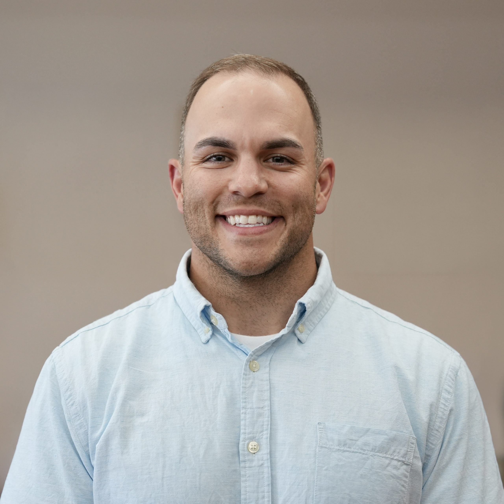

Zach Samz
CAMPUS PASTOR • EDGEWOOD COMMUNITY CHURCH
Campus Pastor at Edgewood Community Church’s Sheboygan Campus since May 2025. M.A. in Christian Education at Dallas Theological Seminary. Husband to Karena. Veteran. Expository preacher. Disciple-maker.
A Word Before You Begin
Welcome to my Ministry Residency Portfolio. My name is Zach, and I serve as the Campus Pastor of Edgewood Community Church’s Sheboygan Campus — a satellite campus I have had the privilege of leading since its launch in January 2023. This portfolio represents work completed over the course of the 2025–2026 academic year as part of the Ministry Formation Residency at Dallas Theological Seminary, where I am pursuing a Master of Arts in Christian Education. What you will find here is not a polished record of easy successes. It is an honest account of a year spent learning, stretching, and being formed — in the classroom, in the pulpit, in difficult leadership conversations, and in ministry contexts I had never thought carefully enough about before.
I did not come to ministry the conventional way. I came to faith at twenty-three years old, after military service, through the patient faithfulness of a believer who refused to stop pursuing me with the gospel. That background shapes everything about how I lead and how I preach. I know what it is to sit on the outside of the church and hear the gospel through a fog of resistance. I know what it is to be broken open by grace you did not expect and could not earn. That experience is the theological center of my ministry: the gospel is not a starting point for the Christian life; it is the sustaining power of the entire thing. Every sermon I preach, every man I disciple, every conflict I navigate, every volunteer I thank — it all flows from that conviction. God saves sinners, and He keeps what He saves, and that is more than enough to build a life and a ministry on.
“Him we proclaim, warning everyone and teaching everyone with all wisdom, that we may present everyone mature in Christ.”Colossians 1:28 — ESV
Navigate the Portfolio
Page Two
Resume
Professional and ministry resumes documenting education, employment, and ministry experience.
Page Three
Christian Leadership
SMART goals, artifacts, and reflections on conflict resolution and servant-hearted leadership.
Page Four
Communication
A year of sermon listening, preaching development, and structured feedback toward growth as a communicator.
Page Five
Cultural Engagement
Pastoral engagement with the Nursery Ministry and Abide Women’s Ministry — learning to see the whole campus.
Page Six
Ministry Distinctive
Best academic work from Dallas Theological Seminary, demonstrating theological depth and pastoral integration.